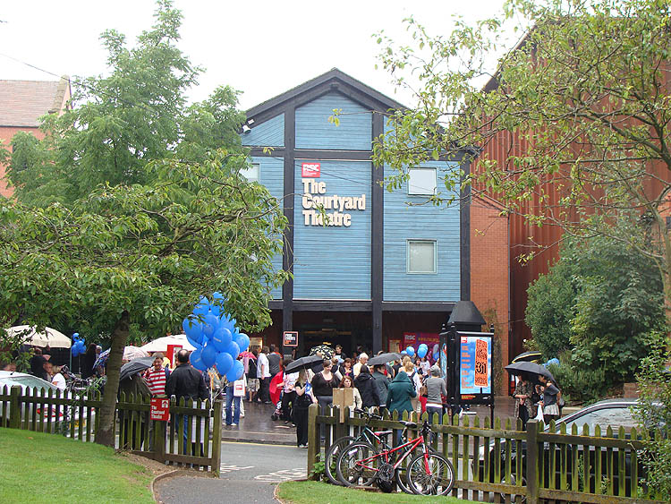

Pictures from Stratford
Upon Avon A talk on Shakespeare with
Patrick Stewart and David Tennant
Not many pictures because it was raining
a lot of time we were here.
Also, only the iPhone pics in the theater,
because I didn't know cameras
would be allowed.

Outside the theater. There were a
lot of people out and about this day.
We were on the front row of the gallery,
off to the side.
It was worth the effort to have heard
the talk.
There are canals and locks around
Stratford Upon Avon.